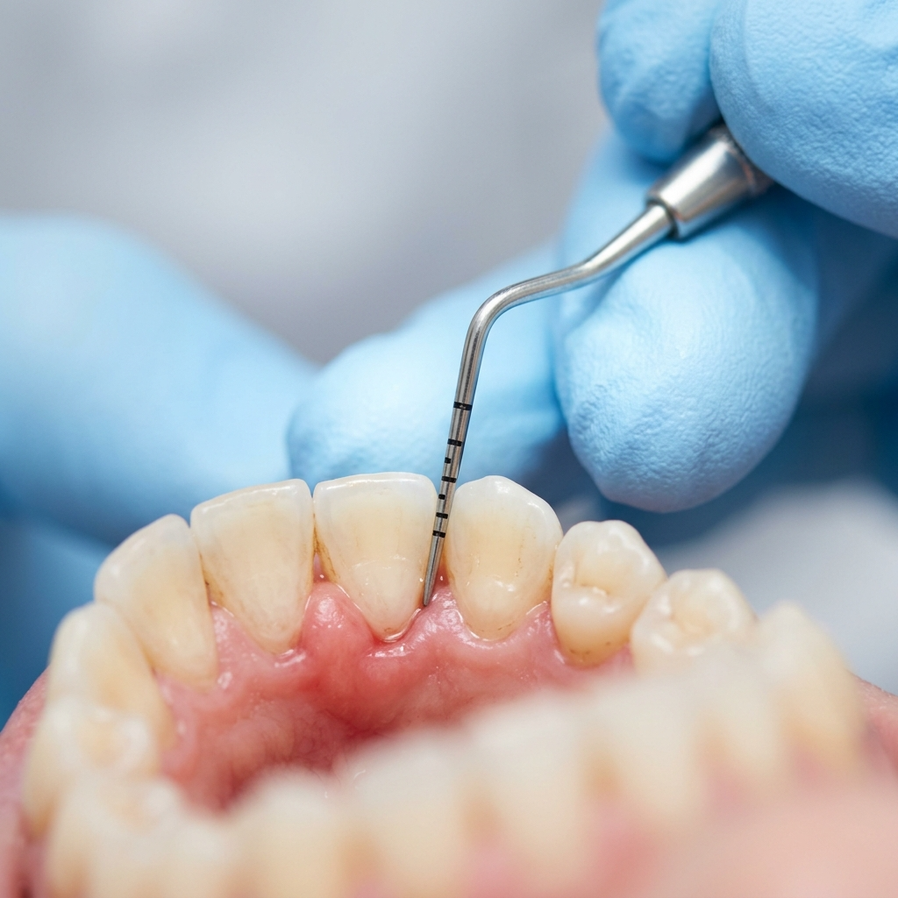

Igiene dentale e prevenzione
La prevenzione è il trattamento più efficace. Mantenere gengive e denti sani significa evitare interventi più complessi in futuro.
La prevenzione è il trattamento più efficace. Mantenere gengive e denti sani significa evitare interventi più complessi in futuro.

Perché è importante
La placca batterica e il tartaro si accumulano quotidianamente su denti e gengive, anche con una buona igiene domiciliare. La seduta di igiene professionale rimuove i depositi che lo spazzolino non riesce a eliminare, prevenendo carie, gengiviti e malattia parodontale.
La frequenza consigliata varia in base alle condizioni individuali: generalmente ogni 6 mesi, ma in presenza di problematiche gengivali il dottore potrebbe suggerire richiami più ravvicinati.

Parodontologia
La malattia parodontale (un tempo chiamata "piorrea") è un'infiammazione cronica delle gengive e dei tessuti di supporto dei denti. Se non trattata, può portare alla mobilità e alla perdita degli elementi dentari. Si stima che colpisca circa il 50% della popolazione adulta in forme più o meno gravi.
Il centro esegue la diagnosi parodontale con sondaggio, radiografie e, dove indicato, esami microbiologici. La terapia causale – rimozione del tartaro sottogengivale e decontaminazione delle tasche – è il primo passo. Nei casi che lo richiedono, si valuta il trattamento chirurgico per correggere i difetti ossei.
Consigli utili
Alcune buone abitudini che fanno la differenza tra una visita di controllo serena e un trattamento impegnativo.
Spazzola per almeno 2 minuti dopo i pasti principali, con movimenti circolari e inclinando lo spazzolino a 45° verso le gengive.
Il filo interdentale rimuove la placca dagli spazi tra un dente e l'altro, dove lo spazzolino non arriva. Usalo almeno una volta al giorno.
Presentati ai richiami concordati con il centro. La prevenzione è più semplice, più economica e più efficace di qualsiasi trattamento correttivo.
Domande frequenti
La seduta di igiene professionale è generalmente indolore. In caso di sensibilità o infiammazione gengivale marcata, il dottore può applicare un'anestesia topica per garantire il massimo comfort.
Di norma ogni 6 mesi, ma la frequenza viene personalizzata. Chi soffre di malattia parodontale potrebbe necessitare di richiami ogni 3-4 mesi.
Se intercettata in tempo, la malattia parodontale può essere stabilizzata attraverso la terapia causale e un programma di mantenimento. L'obiettivo è arrestarne la progressione e conservare i denti naturali.